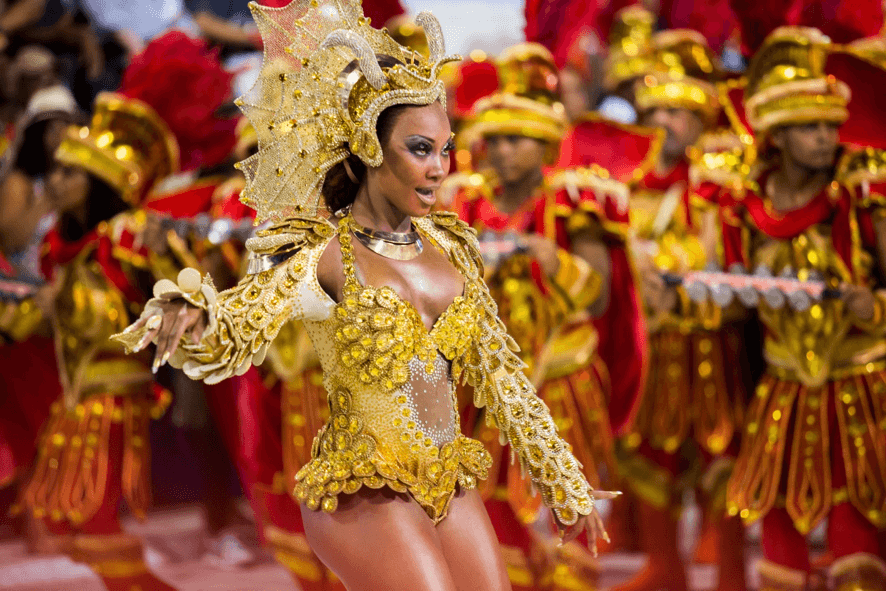
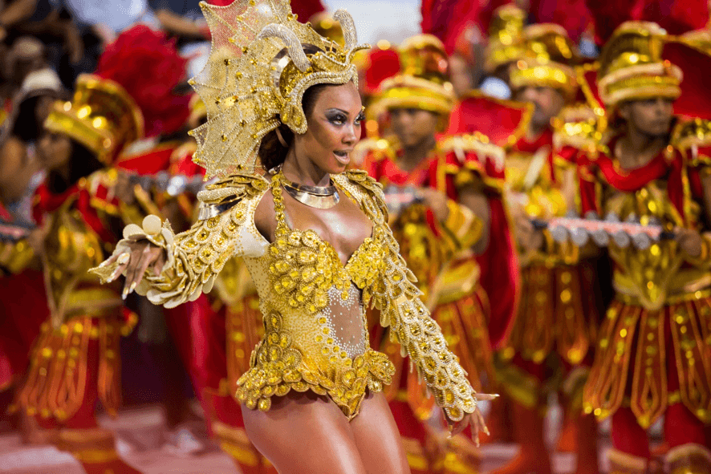
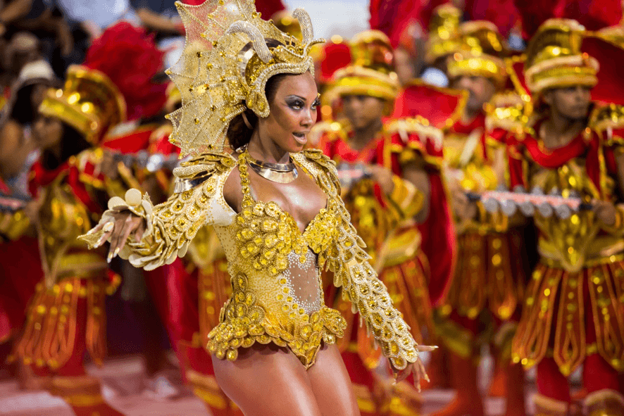
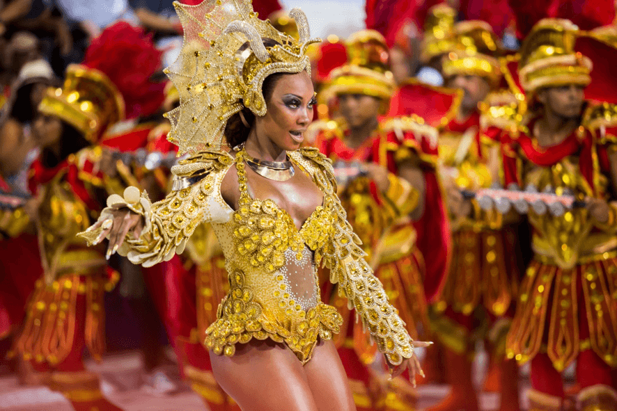

.jpg) 



¡Prepárate para vivir la experiencia más vibrante y espectacular del planeta! El Carnaval de Río de Janeiro no es solo una fiesta, ¡es un estallido de música, color y alegría que invade las calles de Brasil!
🌟 Desfiles de Escuelas de Samba
El corazón del carnaval late en el Sambódromo Marquês de Sapucaí, donde las escuelas de samba compiten con carrozas gigantes, trajes deslumbrantes y coreografías impresionantes. Cada desfile cuenta una historia, un tema único lleno de creatividad y pasión. ¡La emoción se palpa en cada tambor y en cada paso de samba!
🎷 Blocos de Calle: Fiesta Sin Límites
Las calles de Río se transforman en un escenario gigante gracias a los blocos, grupos musicales abiertos a todos. Desde ritmos de samba hasta axé, cada bloco es una explosión de energía donde locales y turistas bailan juntos, ¡sin parar!
✨ Música, Baile y Disfraces
El ritmo contagioso de la samba se mezcla con plumas, lentejuelas y disfraces coloridos que hacen que cada calle y cada desfile sea un espectáculo visual. Tanto en el Sambódromo como en los blocos de barrio, el carnaval es una fiesta para todos los sentidos.
| Dia | Evento | Hora |
|---|---|---|
| Viernes | Desfiles preliminares de escuelas de samba | 21:00 - 02:00 |
| Sabado | Desfiles principales | 21:00 - 05:00 |
| Domingo | Blocos de calle en varios barrios | 10:00 - 23:00 |
| Lunes | Blocos de calle | 10:00 - 23:00 |
| Martes | Desfile de campeonas de samba | 21:00 - 01:00 |
| Miercoles | Blocos de cierre y despedida | 10:00 - 20:00 |
Aquí se realizan los desfiles oficiales de las escuelas de samba, con graderías para miles de espectadores.